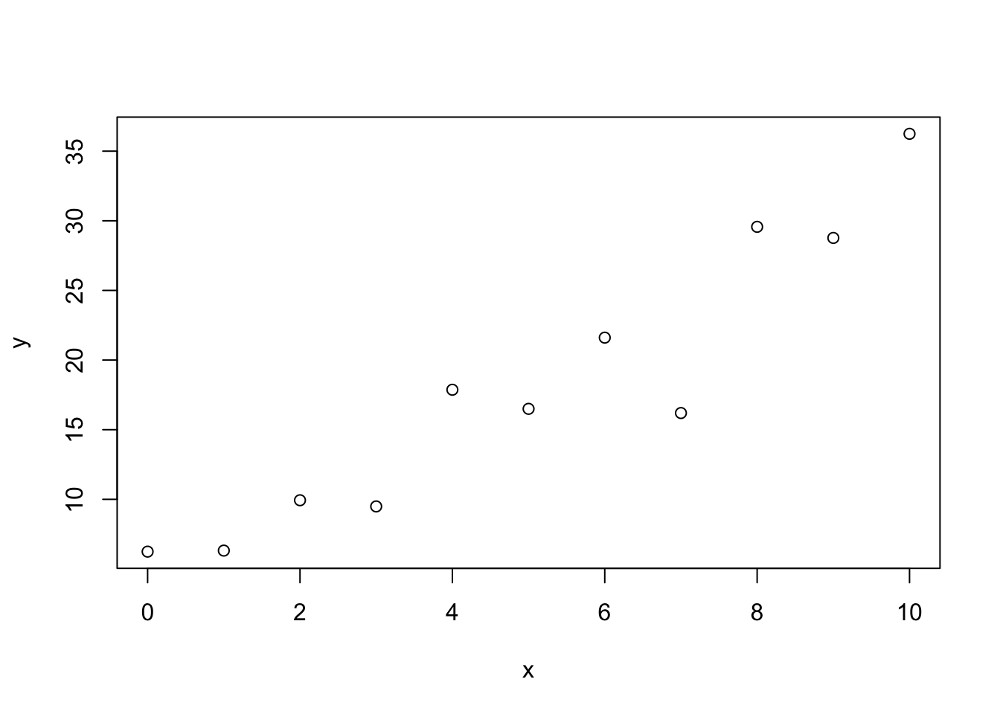
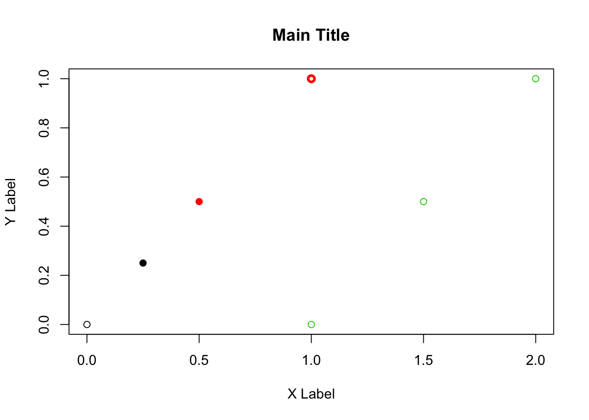
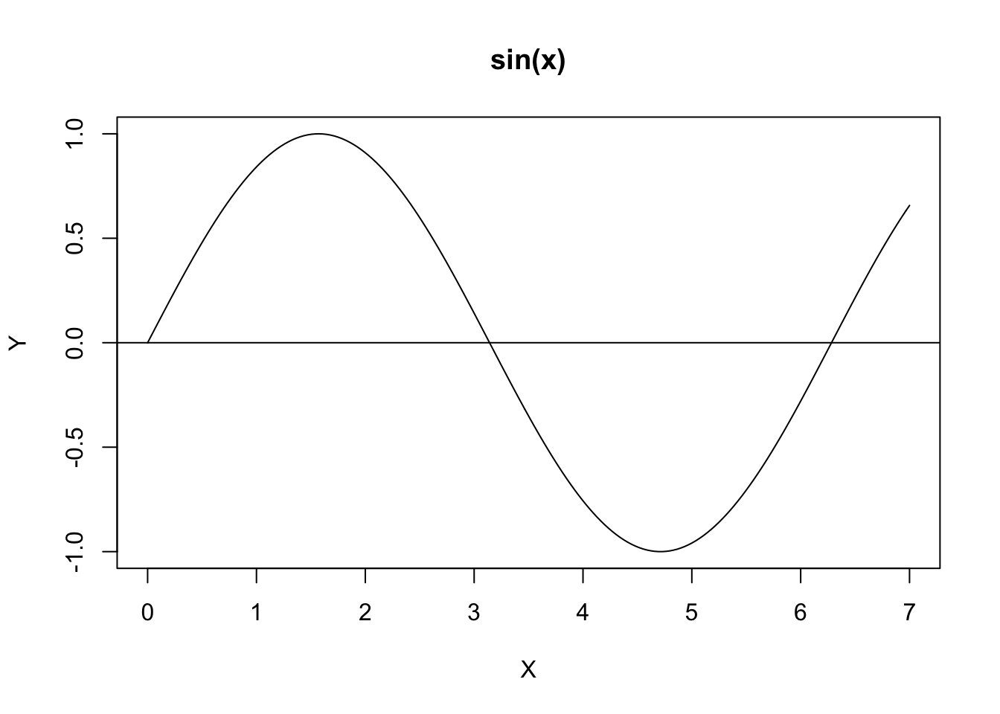
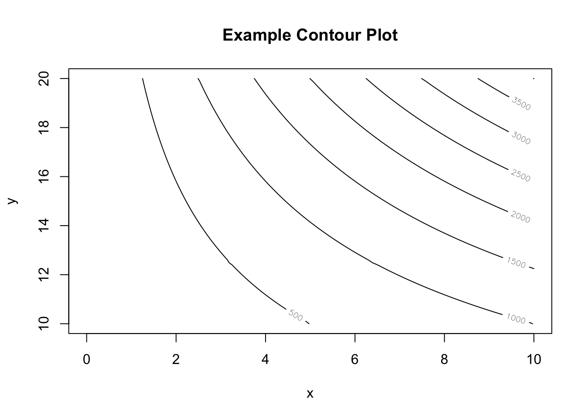

Chapter 5 Basic Graphing
One of the most important things we can do in exploratory statistics is to just look at the data in graphical form so that we can more easily see trends. Most of the graph functions have similar options for setting the main title, x-label, y-labels, etc.
5.1 Univariate Graphs
6.1.1 Barcharts
This is chart that is intended to show the relative differences between a number of groups. To create this graph, all we need is the heights of the individual bars.
x <- 1:4 # The vector 1,2,3,4
barplot(x) # First bar has height 1, next is 2, etc
This is extremely basic, but is a bit ugly. We’ll add a x and y labels and names for each bar.
x <- 1:4
barplot(x,
xlab='My X label',
ylab='My Y Label',
main='Main Title',
names.arg=c('Coho','Chinook','Pink','Sockeye')
)
5.1.1 Histograms
Histograms are way of summarizing a large number of observations. It allows the reader to see what values are very common and along with the range of the data. The primary aspects of this plot that you might want to change are the number of histogram bins and where the breaks between bins occurs.
To generate data for the histogram, we’ll use the function rnorm(n, mean=0, sd=1) which generates n random variables from a normal distribution with mean mean and standard deviation sd. Notice that rnorm will default to giving random variables from a standard normal distribution.
data <- rnorm(10000)
hist(data)
R does a decent job of picking reasonable defaults for the number of bins and breakpoints, but with \(10,000\) observations, I think we should have more bins. To do this, I’ll use the optional breaks argument to specify where to split the bins.
hist(data, breaks=30)
Finally I might want the y-axis to not be the number of observations within a bin, but rather the density of an observation. Density is calculated by taking the number of observations in a bin and then dividing by the total number of observations and then dividing by width of the bin. This forces the sum of the area in all of the bins to be 1. To do this, we’ll use the freq argument and set it to be FALSE.
hist(data, breaks=30, freq=FALSE, xlab='x',
main='Histogram of the Standard Normal Distribution' )
5.2 Bivariate Plots
5.2.1 Boxplots
Boxplots are designed to compare distributions among multiple groups.
y <- c( rnorm(50, mean=1), # Group A is centered at 1
rnorm(50, mean=-1), # Group B is centered at -1
rnorm(50, mean=0)) # Group C is centered at 0
group <- c( rep('A', 50), rep('B',50), rep('C',50) )
boxplot(y ~ group)
When calling boxplot() the main argument is a formula that describes a relationship between two variables. Formulas in R are always in the format y.variable ~ x.variable where I think of this as saying my y-variable is a function of the x-variable.
You can get the boxplot to separate on more than one variable by using y.variable ~ x1.variable + x2.variable.
5.2.2 Scatterplots
Scatterplots are a way to explore the relationship between two continuous variables.
x <- seq(0,10,by=1)
y <- 2 + 3*x + rnorm(10, sd=4)## Warning in 2 + 3 * x + rnorm(10, sd = 4): longer object length is not a
## multiple of shorter object lengthplot(x, y)
5.2.3 Arbitrary Curves
Often I want to plot a curve. To do that, I’ll make a scatterplot, but tell R that I don’t want points, but rather I want it to connect the dots into a curve. To do this I will change the type argument to plot and tell it to make a line.
x <- seq(0,10,by=.01)
plot(x, sin(x), type='l')
5.3 Advanced tricks
R has a very powerful graphing system that is highly customizable. When a standard plot isn’t sufficient for my needs I will either start with a blank plot or just a piece of a plot and then add elements as necessary.
All of the graphical parameters that can be modified are available in par() and the help page for par is useful for finding out what things you can modify.
5.3.1 Blank plots
The plot function has an argument type that defines the behavior of the scatter plot. The default is to plot points, but another option we have used is to connect the points by lines.
type |
Result |
|---|---|
p |
Points |
l |
Line (connect the dots) |
b |
Both points and lines |
n |
None (set up the plot box, but don’t graph anything) |
Another useful option to plot is the arguments xlim and ylim which take vectors that define the extent of the two axes.
plot(NA, NA, xlim=c(0,2), ylim=c(0,1), type='n',
xlab='X Label', ylab='Y Label', main='Main Title')
5.3.2 Points
Adding points to a graph is done by the function points(x, y) which takes arguments x and y which are numerical vectors of equal length. Arguments that affect the display of points are given below.
pch- point character. This can either be a single character or an integer code for one of a set of graphics symbols. Unfortunately the integer codes start at 19. For a description of which code maps to what character, see the help documention?points.col- Color of point. This can be a character string or an integer code. The default is black which is also #1. #2 is red and #3 is green.lwd- Line width for drawing the symbols
plot(x=c(0,2),y=c(0,1), #type='n',
xlab='X Label', ylab='Y Label', main='Main Title')
points( 0, 0 ) # open circle
points(.25, .25, pch=19) # closed black dot
points(.50, .50, pch=22, col='red') # open red square
points(1.0, 1.0, col=2, lwd=3) # thick open red circle
points(c(1,1.5,2), c(0,.5,1), col=3) # green circles
For more details about the different point types, refer to the help page for points().
5.3.3 Lines
Adding lines to a graph often done by the function abline(intercept, slope) which defines a line. Alternately it supports arguments to draw a horizontal (h=) or vertical line (v=).
Arguments that affect the line characteristics are
col- Color of point. This can be a character string or an integer code. 1-4 correspond to black, red, green, and blue.lwd- Line width, defaults to 1.lty- Line type. 1 is a solid line, 2 is dashed, 3 is dotted.
plot(NA, NA, xlim=c(0,2), ylim=c(0,1), type='n', # Set up a blank plot...
xlab='X Label', ylab='Y Label', main='Main Title')
abline(1, -1/2) # Black line y-intercept=1, slope=-1/2
abline(v=1, col=2, lwd=3) # Vertical solid red line
abline(h=.5, col=3, lty=2, lwd=5) # Horizonal green dashed line
The way that abline() is defined, it is very convenient to add the least-squares regression line to a plot of data points.
x <- seq(0,1, length.out=30)
y <- 3 + 2*x + rnorm(30)
plot(x,y)
abline( coef(lm(y~x)) ) # add the regression line to the plot
The second way to add a line to a plot is using the lines() function which allows you to draw an arbitrary curve. It requires vectors of x and y values.
plot(NA, NA, xlim=c(0,7), ylim=c(-1,1), type='n', # again a blank plot
xlab='X', ylab='Y', main='sin(x)')
x <- seq(0,7, length=201) # 201 values from 0 to 7
lines(x, sin(x)) # sin(x)
abline(h=0) # Horizontal line at 0
5.3.4 Contour Plots
R can make more advanced plots. One common three dimensional plot is a contour plot, basically a topographical map. To produce this map, we need vectors of x and y coordinates, and a matrix of z values (the elevations in a topo map).
x <- seq( 0, 10, length=101)
y <- seq(10, 20, length=101)
z <- matrix(NA, ncol=101, nrow=101)
for(i in 1:101){
for(j in 1:101){
z[i,j] <- x[i] * y[j]^2
}
}
contour(x,y,z, xlab='x', ylab='y', main='Example Contour Plot')
5.4 Exercises
For this set of exercises, we’ll use a dataset that contains information about the birthweight of infants and how it relates to the mother’s characteristics. First we’ll load the package the data lives in and update two factor variables to have more intelligent labels.
library(MASS)
library(dplyr)
birthwt <- birthwt %>% mutate(
race = factor(race, labels=c('White','Black','Other')),
smoke = factor(smoke, labels=c('No Smoke', 'Smoke')))Create a histogram of the birthweights (The column is
bwt).Make a set of boxplots of
bwtrelative to the mothersrace.Modify the boxplot command so that the we include both
raceandsmokeby using the formulabwt~race+smoke.- Create a scatterplot of the baby’s
bwtrelative to the mother’s weightlwt.- First create the simple scatterplot using the
plotcommand. You could using either of the following commands to do this.
plot( birthwt$lwt, birthwt$bwt ) plot( bwt ~ lwt, data=birthwt)Add the mothers race by adding
col=birthwt$raceorcol=raceargument to the plot command.Similarly add the mothers smoking status to the plot by using the character type argument
pch=. Unfortunately, we cannot just saypch=smokebecause the factor has two levels (coded as 1 and 2), but we need to use point types that are 19 or above. So I want these to be point type 21 (a filled circle) and point type 22 (a filled square). So annoyingly I need to add 20 to the integer value of thesmokevariable.plot( bwt ~ lwt, data=birthwt, col=race, pch=as.integer(smoke)+20)
- First create the simple scatterplot using the